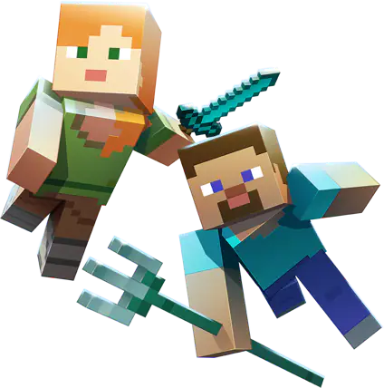
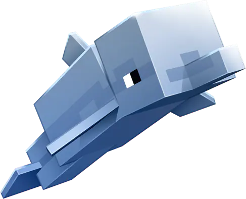

UPDATE AQUATIC!
Take a deep breath and dive into a vibrant new world beneath the surface! Full
of marine life, new mobs and colourful sea-nery, Minecraft's oceans are about
to get their biggest update yet!
FRIEND, FOE OR FISH?
A WORLD OF NEW CREATURES
The oceans of the Overworld are populated by both fish and foe alike.
Some will fight you, while others will become your buddy! Play with the
dolphins, swim with majestic turtles, or brawl with the hostile drowned. And
if you do come up for air, watch out for the phantom soaring the skies!
DIVE DEEP INTO THE UNKNOWN!
EXPLORE THE DEPTHS
Swim through a paradise of colourful reefs, deep sea trenches, and kelp
forests all filled with neat new blocks to use in your builds! Legend also
speaks about shipwrecks and forgotten ruins, rumoured to hold treasures
for any adventurer brave enough to explore them…
UNDERWATER RICHES AWAITS YOU!
WIELD NEW ITEMS
It is said that the oceans are home to some mythical items, and only the
most daring adventurers reap the rewards! Discover shipwrecks and
underwater ruins, take a swing at the drowned for a chance to earn a
mighty trident, or assemble the awesome conduit.